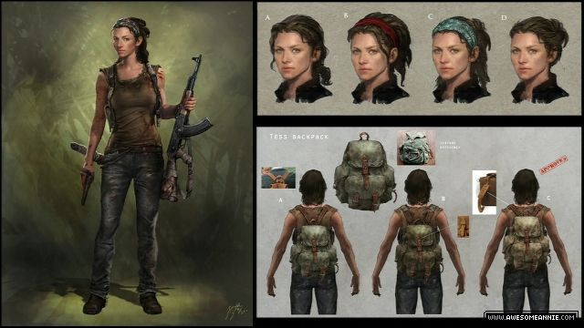
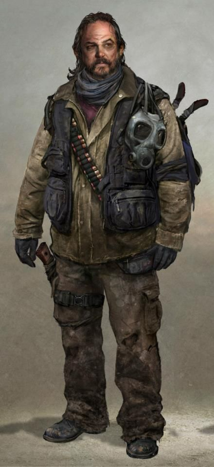
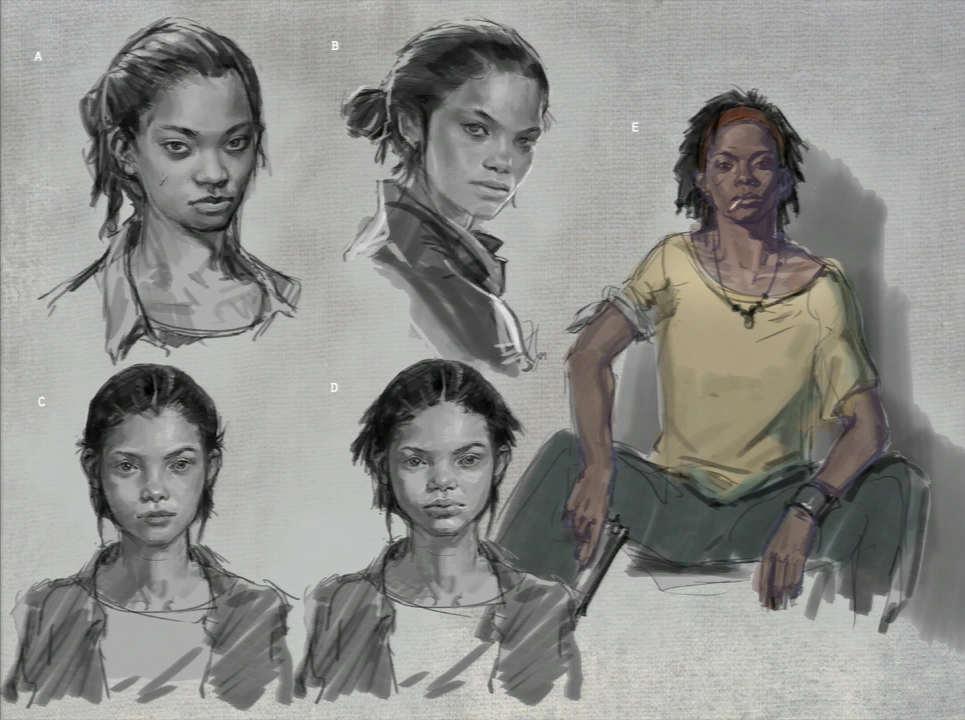
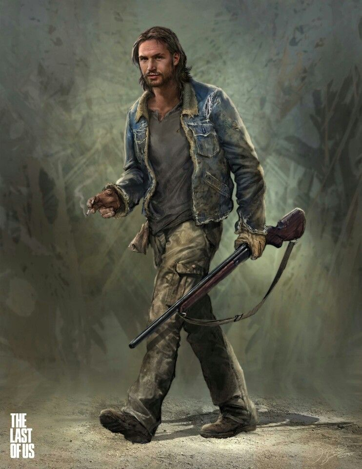
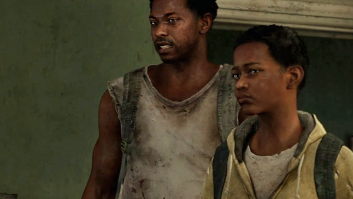
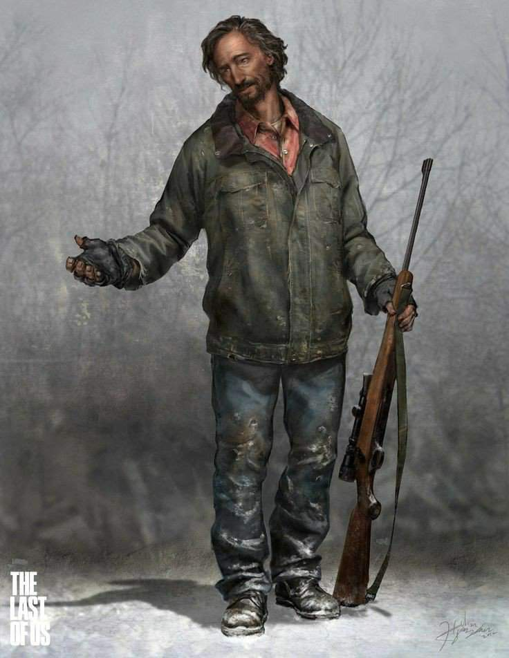
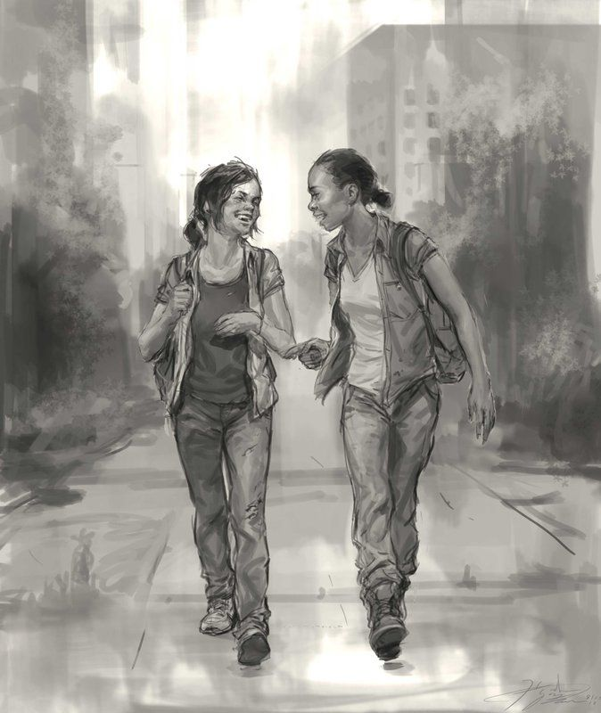

No, we are survivors!
- Joel- The main character a hardened, strong, and capable survivor who travels with and protects Ellie throughout the game.
- Ellie- She could also be considered the main character as she plays almost a bigger role than Joel does with her immunity. She is very capable and fearless even if she's on the younger side and gets Joel out of many bad situations.
- Tess- A companion to Joel who is a very trustworthy and capable partner that helps some of the way in getting Ellie to Salt Lake City.
- Bill- A paranoid yet very smart friend of Joel's who provides them with a car and some gear on their journey.
- Marlene- She is a capable and very well spoken leader of the militia group the Fireflies, her ultimate goal is to find a cure to the Cordyceps virus and rebuild human civilization.
- Tommy- Is Joel's brother who is with him at the beginning of the outbreak but becomes estranged due to differing outlooks and builds a settlement in Jackson Wyoming for struggling survivors.
- Henry and Sam- Are two survivors Joel and Ellie come across in their journey, they are initially hesitant towards Joel and Ellie but eventually work together with them for a short time.
- David- Is the leader of a group of cannibalistic survivors who Ellie comes across while attempting to heal Joel from a serious wound, he attempts to capture Ellie but is outsmarted by her and Joel.
- Riley- Is Ellie's best friend before meeting Joel and lives with her in a quarantine zone and is with Ellie when they are both infected.
(Images are in order of listed characters, besides Joel and Ellie).
      